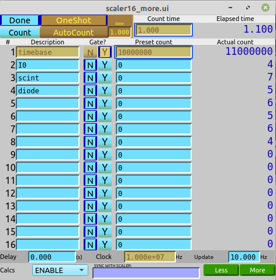

Minimal: Scan scaler vs motor#
APS Training for Bluesky Data Acquisition.
Objective
Connect an EPICS motor PV, an EPICS scaler PV, and scan using the bluesky RunEngine with the BestEffortCallback to visualize the acquired data.
EPICS PV |
Python object name |
description |
|---|---|---|
|
|
motor PV (simulates a stepper motor) |
|
|
scaler PV (simulates a Joerger VSC16 scaler) |
Connect the motor#
First, import the ophyd.EpicsMotor (class) definition. This Python class from ophyd is the best representation of the synApps motor record.
[1]:
from ophyd import EpicsMotor
Then, define the xpos object. The EPICS PV is the first argument. The name="xpos" is required. Make the value of this keyword argument match the name of the Python object being assigned. The labels=("motor",) keyword argument enables certain features for the user interface that will be described later.
[2]:
xpos = EpicsMotor("gp:m1", name="xpos", labels=("motor",))
Wait for that to connect with EPICS
[3]:
xpos.wait_for_connection()
Show the position of the xpos motor now.
[4]:
xpos.position
[4]:
-0.3
Try to move xpos using the IPython magic command: %mov.
[5]:
# wrap in a try..except handler so notebook can run past this point
try:
%mov xpos 1
except Exception as exc:
print(f"Exception: {exc}")
Exception: Line magic function `%mov` not found.
Note this command fails since the IPython magic commands are not loaded automatically. As an alternative, use the motor’s .move(SETPOINT) method to move the motor to the new SETPOINT value. Here, move xpos to 1.
[6]:
xpos.move(1)
[6]:
MoveStatus(done=True, pos=xpos, elapsed=1.5, success=True, settle_time=0.0)
The .move() method returns a status object. The status object may be used to report about the move or to wait for the motor to complete its move.
Next, load the IPython Magic commands provided by bluesky. These are helpers to make the command line use easier. Use them at your choice.
[7]:
from bluesky.magics import BlueskyMagics
get_ipython().register_magics(BlueskyMagics)
Repeat the move of xpos by sending it to 0 using the magic command.
[8]:
%mov xpos 0
xpos: 9%|██▌ | 0.09/1.0 [00:00<00:01, 1.46s/degrees]
xpos: 19%|█████▎ | 0.19/1.0 [00:00<00:00, 1.22s/degrees]
xpos: 29%|███████▊ | 0.291/1.0 [00:00<00:00, 1.15s/degrees]
xpos: 39%|██████████▌ | 0.391/1.0 [00:00<00:00, 1.11s/degrees]
xpos: 49%|█████████████▎ | 0.491/1.0 [00:00<00:00, 1.09s/degrees]
xpos: 59%|███████████████▉ | 0.592/1.0 [00:00<00:00, 1.07s/degrees]
xpos: 69%|██████████████████▋ | 0.692/1.0 [00:00<00:00, 1.06s/degrees]
xpos: 79%|█████████████████████▍ | 0.793/1.0 [00:00<00:00, 1.05s/degrees]
xpos: 89%|████████████████████████▏ | 0.894/1.0 [00:00<00:00, 1.05s/degrees]
xpos: 97%|███████████████████████████▏| 0.97/1.0 [00:01<00:00, 1.07s/degrees]
xpos: 100%|██████████████████████████▉| 0.999/1.0 [00:01<00:00, 1.14s/degrees]
xpos: 100%|█████████████████████████████| 1.0/1.0 [00:01<00:00, 1.24s/degrees]
xpos [In progress. No progress bar available.]
Connect the scaler#
The ophyd package provides two representations of the synApps scaler record (EpicsScaler and ScalerCH). My opinion is that the ScalerCH class provides the representation most compatible with use at the APS.
As before, import the ophyd class:
[9]:
from ophyd.scaler import ScalerCH
Then, connect with the EPICS PV. This is similar to how the motor was connected (above). Make the name= keyword match with the Python object name being created. The labels=("scalers", "detectors") keyword argument enables certain features for the user interface that will be described later.
[10]:
vsc16 = ScalerCH("gp:scaler1", name="vsc16", labels=["scalers", "detectors"])
Configure the Python object to ignore the channels with no name defined (in the .NMnn field of the scaler PV).
In this example control screen for our scaler, only a few of the channels are named:

[11]:
vsc16.select_channels()
Show the value for each of the named channels in our scaler. This will also include the most recent count time.
[12]:
vsc16.read()
[12]:
OrderedDict([('timebase',
{'value': 6000000.0, 'timestamp': 1629391538.435033}),
('I0', {'value': 1.0, 'timestamp': 1629391538.435033}),
('scint', {'value': 2.0, 'timestamp': 1629391538.435033}),
('diode', {'value': 3.0, 'timestamp': 1629391538.435033}),
('I00', {'value': 3.0, 'timestamp': 1629391538.435033}),
('roi1', {'value': 0.0, 'timestamp': 1629391538.435033}),
('roi2', {'value': 0.0, 'timestamp': 1629391538.435033}),
('vsc16_time', {'value': 0.6, 'timestamp': 1629391538.435033})])
If no channels are shown, such as:
OrderedDict([('vsc16_time', {'value': 0.0, 'timestamp': 631152000.0})])
then we want to name some channels here for our simulator. We can do this directly from Python (although you would not usually want to do this at a real, operating instrument, since the channels are named as a result of hardware connections with real detectors). We’ll take channels 1-5 for timebase, I0, scint, diode, & I00, then skip a few channels to 11 & 12 and call them roi1 & roi2, respectively.
It’s OK to have empty (that is, unnamed) channels. It’s not OK to have white space in these names since the names will be used as Python objects within bluesky. That also means no other characters (such as math symbols and such) that cannot be used as a Python object name. Also, do not use the same name in two different scaler channels.
[13]:
vsc16.channels.chan01.chname.put("timebase")
vsc16.channels.chan02.chname.put("I0")
vsc16.channels.chan03.chname.put("scint")
vsc16.channels.chan04.chname.put("diode")
vsc16.channels.chan05.chname.put("I00")
vsc16.channels.chan11.chname.put("roi1")
vsc16.channels.chan12.chname.put("roi2")
Then select the named channels and read again:
[14]:
vsc16.select_channels()
vsc16.read()
[14]:
OrderedDict([('timebase',
{'value': 6000000.0, 'timestamp': 1629391538.435033}),
('I0', {'value': 1.0, 'timestamp': 1629391538.435033}),
('scint', {'value': 2.0, 'timestamp': 1629391538.435033}),
('diode', {'value': 3.0, 'timestamp': 1629391538.435033}),
('I00', {'value': 3.0, 'timestamp': 1629391538.435033}),
('roi1', {'value': 0.0, 'timestamp': 1629391538.435033}),
('roi2', {'value': 0.0, 'timestamp': 1629391538.435033}),
('vsc16_time', {'value': 0.6, 'timestamp': 1629391538.435033})])
Set the scaler’s counting time#
The ScalerCH class defines the count time as the preset_time attribute. Show it’s value:
[15]:
vsc16.preset_time.get()
[15]:
0.5
Set the counting time to 0.5 s using the %mov magic command (same command that moves a motor).
[16]:
%mov vsc16.preset_time 0.5
Use the IPython %ct magic command to count each object with the detectors label keyword.
[17]:
vsc16.preset_time.get()
[17]:
0.5
[18]:
ct
[This data will not be saved. Use the RunEngine to collect data.]
timebase 6000000.0
I0 2.0
scint 3.0
diode 2.0
I00 2.0
roi1 0.0
roi2 0.0
vsc16_time 0.6
[19]:
%ct
[This data will not be saved. Use the RunEngine to collect data.]
timebase 6000000.0
I0 3.0
scint 2.0
diode 3.0
I00 2.0
roi1 0.0
roi2 0.0
vsc16_time 0.6
labels and the %wa magic command#
As noted above, the labels=LIST keyword argument used when the motor and scaler objects were create enable certain features. For example, the %ct magic command will count all the detectors.
Actually, detectors is the default argument for the %ct magic. If an arument is supplied, it is the name of a label to be matched. This is why the additional label of scalers was included. Thus, we could count only scalers with the command %ct scalers.
Use the labels keyword liberally to group similar objects.
The %wa magic shows relevant information for all labeled objects (or, for the named label if supplied). For example:
[20]:
%wa
motor
Positioner Value Low Limit High Limit Offset
xpos 0.0 -32000.0 32000.0 0.0
Local variable name Ophyd name (to be recorded as metadata)
xpos xpos
scalers
Local variable name Ophyd name (to be recorded as metadata)
vsc16 vsc16
detectors
Local variable name Ophyd name (to be recorded as metadata)
vsc16 vsc16
[21]:
%wa motor
motor
Positioner Value Low Limit High Limit Offset
xpos 0.0 -32000.0 32000.0 0.0
Local variable name Ophyd name (to be recorded as metadata)
xpos xpos
Prepare to scan#
Before we can run our first bluesky scan, we have to import various software tools.
First is the bluesky RunEngine(), which will manage the various activities for the scan (move motor, wait, trigger scaler, wait, collect channel data, publish to data subscribers, …).
Create a RunEngine() object. The argument here is a dictionary (empty in this training session). (For routine operations at an instrument, the dictionary is filled with information saved from the previous session.)
[22]:
import bluesky
RE = bluesky.RunEngine({})
To save the acquired data, we connect with a MongoDB database using a preconfigured datafile that describes our training catalog. Using the IPython ! technique to issue a Linux command from an IPython session, we cat (concatenate) the contents of that file to the output here:
[23]:
!cat ~/.local/share/intake/training.yml
# file: training.yml
# purpose: Configuration file to connect Bluesky databroker with MongoDB
# For Bluesky Python Training at APS
# Copy to: ~/.local/share/intake/training.yml
# Create subdirectories as needed
sources:
training:
args:
asset_registry_db: mongodb://localhost:27017/training-bluesky
metadatastore_db: mongodb://localhost:27017/training-bluesky
driver: bluesky-mongo-normalized-catalog
To connect, we need the training catalog. This name is provided by the line indented after the sources: line in the above .yml file. (The name of the .yml file does not matter. The databroker.catalog software will look through all .yml files in this directory for thetraining configuration.)
We’ll use the reference to our databroker catalog frequently, so we give it a short name.
[24]:
import databroker
db = databroker.catalog["training"]
How many (bluesky data collection) runs are recorded in this catalog? Get its length:
[25]:
len(db)
[25]:
68
Configure RE to publish the run data to our db object. We must use the .v1 software interface for legacy reasons.
[26]:
RE.subscribe(db.v1.insert)
[26]:
0
A progress bar can be helpful to show that long operations are actually progressing. These steps load a progress bar and configure RE.
[27]:
from bluesky.utils import ProgressBarManager
pbar_manager = ProgressBarManager()
RE.waiting_hook = pbar_manager
The BestEffortCallback provides easy visualization of data (tables, plots, peaks statistics) as it is acquired by the RE. Subscribe it to the RE so it receives data during a RE() run.
[28]:
from bluesky.callbacks.best_effort import BestEffortCallback
bec = BestEffortCallback()
RE.subscribe(bec)
peaks = bec.peaks
Supplemental baseline data is recorded before and after each run. Additionally, EPICS Channel Access monitors can update PVs asynchronous to the primary data acquisition. These monitors can be saved as additional data streams in a run. Prepare to use this feature.
[29]:
from bluesky import SupplementalData
sd = SupplementalData()
RE.preprocessors.append(sd)
Add the name of this notebook as metadata to every run. This is done by adding to the RunEngine’s metadata dictionary (RE.md), content that will be added to the start document of every run. The metadata is useful documentation about a run and can be used for several purposes, such as to record a general condition (such as the name of this notebook) or to identify these runs from a database search.
[30]:
RE.md["notebook"] = "basic-motor-scaler-scan"
Summary of preparations for scanning#
EPICS connections to motor and scaler
databroker
RunEngine
subscriptions
databroker
ProgressBarManager
BestEffortCallback (tables and plots)
supplemental data (monitors and baselines)
metadata
First scan#
The standard plans provided in bluesky.plans are sufficient for many needs, so import them and, in the same command, give the package a short name (bp) since it is used frequently.
[31]:
from bluesky import plans as bp
The scan() plan is flexible and will be used here to scan scaler vs. motor. The first argument is the list of detectors to be recorded. Here, we give the scaler object vsc16. The next argument is the positioner object, then start and end positions, finally, the number of points to be collected.
Observe that we do not run the scan directly, but rather give the scan to the RE() object. The RE() object will run the scan, performing each of the actions defined by the scan, but also handle the additional tasks of managing the data acquisition process, publishing data to all subscribers (here: databroker and BestEffortCallback) and checking for updates from EPICS and checking if the run must be interrupted either by user request or some other observation. (We have not configured any
of those other observations in this simple example.)
[32]:
RE(bp.scan([vsc16], xpos, -1, 1, 7))
Transient Scan ID: 1 Time: 2021-08-19 14:02:41
Persistent Unique Scan ID: 'fb41419c-0aef-4ff4-8992-7aa2b62f9931'
xpos: 9%|██▍ | 0.091/1.0 [00:00<00:01, 1.97s/degrees]
xpos: 19%|█████▎ | 0.19/1.0 [00:00<00:01, 1.47s/degrees]
xpos: 29%|████████ | 0.29/1.0 [00:00<00:00, 1.31s/degrees]
xpos: 39%|██████████▉ | 0.39/1.0 [00:00<00:00, 1.23s/degrees]
xpos: 49%|█████████████▎ | 0.491/1.0 [00:00<00:00, 1.18s/degrees]
xpos: 59%|███████████████▉ | 0.591/1.0 [00:00<00:00, 1.15s/degrees]
xpos: 69%|██████████████████▋ | 0.691/1.0 [00:00<00:00, 1.13s/degrees]
xpos: 79%|█████████████████████▍ | 0.792/1.0 [00:00<00:00, 1.11s/degrees]
xpos: 89%|████████████████████████ | 0.892/1.0 [00:00<00:00, 1.10s/degrees]
xpos: 97%|██████████████████████████▏| 0.968/1.0 [00:01<00:00, 1.12s/degrees]
xpos: 100%|██████████████████████████▉| 0.999/1.0 [00:01<00:00, 1.18s/degrees]
xpos: 100%|█████████████████████████████| 1.0/1.0 [00:01<00:00, 1.28s/degrees]
xpos [In progress. No progress bar available.]
vsc16 [In progress. No progress bar available.]
vsc16 [In progress. No progress bar available.]
New stream: 'primary'
+-----------+------------+------------+------------+------------+------------+------------+------------+------------+------------+
| seq_num | time | xpos | timebase | I0 | scint | diode | I00 | roi1 | roi2 |
+-----------+------------+------------+------------+------------+------------+------------+------------+------------+------------+
| 1 | 14:02:43.7 | -1.00000 | 6000000 | 3 | 2 | 1 | 3 | 0 | 0 |
xpos: 27%|██████▎ | 0.091/0.33333 [00:00<00:00, 1.79s/degrees]
xpos: 57%|█████████████▋ | 0.19/0.33333 [00:00<00:00, 1.38s/degrees]
xpos: 84%|████████████████████▏ | 0.28/0.33333 [00:00<00:00, 1.29s/degrees]
xpos: 98%|██████████████████████▌| 0.327/0.33333 [00:00<00:00, 1.42s/degrees]
xpos: 100%|██████████████████████▉| 0.333/0.33333 [00:00<00:00, 1.69s/degrees]
xpos [In progress. No progress bar available.]
vsc16 [In progress. No progress bar available.]
vsc16 [In progress. No progress bar available.]
| 2 | 14:02:45.8 | -0.66700 | 6000000 | 3 | 3 | 3 | 2 | 0 | 0 |
xpos: 27%|██████▎ | 0.091/0.33367 [00:00<00:00, 2.07s/degrees]
xpos: 57%|█████████████▏ | 0.191/0.33367 [00:00<00:00, 1.52s/degrees]
xpos: 84%|███████████████████▎ | 0.281/0.33367 [00:00<00:00, 1.39s/degrees]
xpos: 98%|██████████████████████▌| 0.327/0.33367 [00:00<00:00, 1.50s/degrees]
xpos: 100%|█████████████████████| 0.33367/0.33367 [00:00<00:00, 1.77s/degrees]
xpos [In progress. No progress bar available.]
vsc16 [In progress. No progress bar available.]
vsc16 [In progress. No progress bar available.]
| 3 | 14:02:48.0 | -0.33300 | 6000000 | 2 | 2 | 2 | 3 | 0 | 0 |
xpos: 27%|██████▊ | 0.091/0.333 [00:00<00:00, 1.42s/degrees]
xpos: 57%|██████████████▎ | 0.191/0.333 [00:00<00:00, 1.20s/degrees]
xpos: 84%|█████████████████████▊ | 0.28/0.333 [00:00<00:00, 1.18s/degrees]
xpos: 98%|████████████████████████▌| 0.327/0.333 [00:00<00:00, 1.32s/degrees]
xpos: 100%|█████████████████████████| 0.333/0.333 [00:00<00:00, 1.60s/degrees]
xpos [In progress. No progress bar available.]
vsc16 [In progress. No progress bar available.]
vsc16 [In progress. No progress bar available.]
| 4 | 14:02:50.1 | 0.00000 | 6000000 | 1 | 3 | 1 | 2 | 0 | 0 |
xpos: 27%|██████▍ | 0.09/0.33333 [00:00<00:00, 1.35s/degrees]
xpos: 57%|█████████████▋ | 0.19/0.33333 [00:00<00:00, 1.16s/degrees]
xpos: 84%|████████████████████▏ | 0.28/0.33333 [00:00<00:00, 1.15s/degrees]
xpos: 98%|██████████████████████▌| 0.327/0.33333 [00:00<00:00, 1.29s/degrees]
xpos: 100%|██████████████████████▉| 0.333/0.33333 [00:00<00:00, 1.57s/degrees]
xpos [In progress. No progress bar available.]
vsc16 [In progress. No progress bar available.]
vsc16 [In progress. No progress bar available.]
| 5 | 14:02:52.1 | 0.33300 | 6000000 | 3 | 2 | 3 | 3 | 0 | 0 |
xpos: 27%|██████▎ | 0.091/0.33367 [00:00<00:00, 1.26s/degrees]
xpos: 57%|█████████████▏ | 0.191/0.33367 [00:00<00:00, 1.13s/degrees]
xpos: 84%|███████████████████▎ | 0.281/0.33367 [00:00<00:00, 1.13s/degrees]
xpos: 98%|██████████████████████▌| 0.327/0.33367 [00:00<00:00, 1.27s/degrees]
xpos: 100%|█████████████████████| 0.33367/0.33367 [00:00<00:00, 1.55s/degrees]
xpos [In progress. No progress bar available.]
vsc16 [In progress. No progress bar available.]
vsc16 [In progress. No progress bar available.]
| 6 | 14:02:54.2 | 0.66700 | 6000000 | 3 | 3 | 3 | 3 | 0 | 0 |
xpos: 27%|███████ | 0.09/0.333 [00:00<00:00, 1.90s/degrees]
xpos: 57%|██████████████▊ | 0.19/0.333 [00:00<00:00, 1.43s/degrees]
xpos: 84%|█████████████████████▊ | 0.28/0.333 [00:00<00:00, 1.33s/degrees]
xpos: 98%|████████████████████████▌| 0.327/0.333 [00:00<00:00, 1.45s/degrees]
xpos: 100%|█████████████████████████| 0.333/0.333 [00:00<00:00, 1.72s/degrees]
xpos [In progress. No progress bar available.]
vsc16 [In progress. No progress bar available.]
vsc16 [In progress. No progress bar available.]
| 7 | 14:02:56.3 | 1.00000 | 6000000 | 3 | 4 | 3 | 2 | 0 | 0 |
+-----------+------------+------------+------------+------------+------------+------------+------------+------------+------------+
generator scan ['fb41419c'] (scan num: 1)
/home/apsu/Apps/miniconda3/envs/bluesky_2021_1/lib/python3.8/site-packages/bluesky/callbacks/fitting.py:165: RuntimeWarning: invalid value encountered in double_scalars
np.sum(input * grids[dir].astype(float), labels, index) / normalizer
[32]:
('fb41419c-0aef-4ff4-8992-7aa2b62f9931',)
The scan ran, data was collected and printed at each step of the scan. Finally, plots were made of the scaler channel vs motor position for each active channel.
Fix a few problems#
There were some problems. First is that an error was reported after the scan (... callbacks/fitting.py:165: RuntimeWarning: invalid value encountered in double_scalars). This error is because the scalers showed no peak during the scan. The scaler is a simulator with no real data. We’ll ignore that error here.
Another problem is that all named scaler channels are shown. Let’s reduce that list to I0 and scint just to show how it is done. (Set back to default: vsc16.select_channels())
[33]:
vsc16.select_channels(['I0', 'scint'])
Another problem is that the scaler counts for 0.1s longer than we have configured. This is a problem with the underlying EPICS support for a simulated (a.k.a. soft channel) scaler. We’ll ignore that error here.
Next problem is that the progress bar is a nuisance in this notebook so we’ll remove it.
[34]:
RE.waiting_hook = None
Then, repeat the same scan.
[35]:
RE(bp.scan([vsc16], xpos, -1, 1, 7))
Transient Scan ID: 2 Time: 2021-08-19 14:02:58
Persistent Unique Scan ID: 'b5f76f7c-78f2-45a5-8264-e0af2ba540bf'
New stream: 'primary'
+-----------+------------+------------+------------+------------+
| seq_num | time | xpos | I0 | scint |
+-----------+------------+------------+------------+------------+
| 1 | 14:03:01.6 | -1.00000 | 2 | 2 |
| 2 | 14:03:03.0 | -0.66700 | 3 | 3 |
| 3 | 14:03:04.4 | -0.33300 | 2 | 2 |
| 4 | 14:03:05.8 | 0.00000 | 1 | 1 |
| 5 | 14:03:07.2 | 0.33300 | 2 | 2 |
| 6 | 14:03:08.5 | 0.66700 | 1 | 1 |
| 7 | 14:03:09.9 | 1.00000 | 4 | 1 |
+-----------+------------+------------+------------+------------+
generator scan ['b5f76f7c'] (scan num: 2)
[35]:
('b5f76f7c-78f2-45a5-8264-e0af2ba540bf',)
Scan with a different counting time : staging#
Suppose that we wish to use a different counting time, we could change the vsc16.preset_time value before running the scan. Another way is to use the ophyd concept of stage & unstage.
Staging is the action of preparing an ophyd device for operation, then resetting it afterwards to its previous values. For our scaler, we could stage a different counting time that would be used during the run, then removed after the run is complete. The stage() and unstage() methods are controlled by an OrderedDictionary where the keys are the attributes of the Python object and the values are used during the run. The RE() takes care of calling stage() and unstage()
during the scan.
Here we show staging of a 2.0s preset_time for the run. Also shown are the preset_time value before and after the run.
[36]:
print(f"{vsc16.preset_time.get() = }")
vsc16.preset_time.get() = 0.5
[37]:
vsc16.stage_sigs["preset_time"] = 2.0
Repeat the same scan.
[38]:
RE(bp.scan([vsc16], xpos, -1, 1, 7))
Transient Scan ID: 3 Time: 2021-08-19 14:03:10
Persistent Unique Scan ID: '04dd2069-cca5-4b55-9ff2-7d4d474cb2e6'
New stream: 'primary'
+-----------+------------+------------+------------+------------+
| seq_num | time | xpos | I0 | scint |
+-----------+------------+------------+------------+------------+
| 1 | 14:03:15.2 | -1.00000 | 10 | 12 |
| 2 | 14:03:18.2 | -0.66700 | 9 | 8 |
| 3 | 14:03:21.1 | -0.33300 | 10 | 9 |
| 4 | 14:03:24.0 | 0.00000 | 11 | 12 |
| 5 | 14:03:26.9 | 0.33300 | 11 | 9 |
| 6 | 14:03:29.8 | 0.66700 | 8 | 11 |
| 7 | 14:03:32.7 | 1.00000 | 11 | 12 |
+-----------+------------+------------+------------+------------+
generator scan ['04dd2069'] (scan num: 3)
[38]:
('04dd2069-cca5-4b55-9ff2-7d4d474cb2e6',)
Custom plan with configurable count time#
It is common to want to set the count time at the time the scan is started. For this feature, a custom scan plan is needed, where we will repeat the steps just shown. This plan will use similar arguments as the bp.scan() used above, but add an optional keyword argument ct for the count time with a default of 1.0 second. For housekeeping, we’ll remove the staging configuration from the scaler after the scan.
A bluesky plan is a Python generator function. The bp.scan() call is the part that makes this a generator function. Briefly, a bluesky plan defers execution of the actual scan until the RE() calls for it. This indirection allows the RE() to manage the plan’s execution when the beam dumps or other interruptions occur. (A function becomes a generator by the
presence of one or more yield commands.)
[39]:
def tscan(scaler, pos, pStart, pEnd, nPts, ct=1):
scaler.stage_sigs["preset_time"] = ct
print(f"{scaler.preset_time.get() = }")
yield from bp.scan([scaler], pos, pStart, pEnd, nPts)
print(f"{scaler.preset_time.get() = }")
del scaler.stage_sigs["preset_time"]
Run the custom plan with 2 seconds count time per point (so we can see this in the time axis).
[40]:
RE(tscan(vsc16, xpos, -1, 1, 7, 2))
scaler.preset_time.get() = 0.5
Transient Scan ID: 4 Time: 2021-08-19 14:03:33
Persistent Unique Scan ID: '6a8d542f-46b4-4fa4-a322-a9a81f2d7de9'
New stream: 'primary'
+-----------+------------+------------+------------+------------+
| seq_num | time | xpos | I0 | scint |
+-----------+------------+------------+------------+------------+
| 1 | 14:03:37.9 | -1.00000 | 9 | 10 |
| 2 | 14:03:40.9 | -0.66700 | 10 | 10 |
| 3 | 14:03:43.8 | -0.33300 | 9 | 8 |
| 4 | 14:03:46.7 | 0.00000 | 12 | 12 |
| 5 | 14:03:49.6 | 0.33300 | 9 | 8 |
| 6 | 14:03:52.5 | 0.66700 | 12 | 11 |
| 7 | 14:03:55.4 | 1.00000 | 11 | 9 |
+-----------+------------+------------+------------+------------+
generator scan ['6a8d542f'] (scan num: 4)
scaler.preset_time.get() = 0.5
[40]:
('6a8d542f-46b4-4fa4-a322-a9a81f2d7de9',)
Challenges#
Try these additional modifications or activities.
Use
loggerto report at various places.Hint:
logger.info("text: %s value: %g", s1, v2, ...)Consider examples as used in
instrument/plans/peak_finder_example.py. See the Python logging tutorial for more information.Write a custom plan that accepts user-provided metadata.
Hint: bp.scan() has the
mdkeyword argument (kwarg) that accepts a dictionary of key: value pairs as the metadata when the plan is run. Your custom plan should accept the same kwarg and pass this tobp.scan(md=the_dictionary), possibly after adding some of its own keys to the metadata.